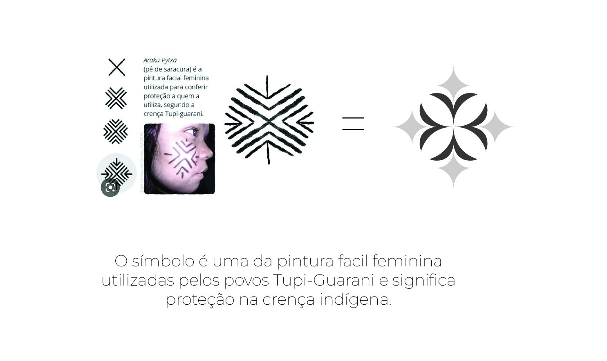
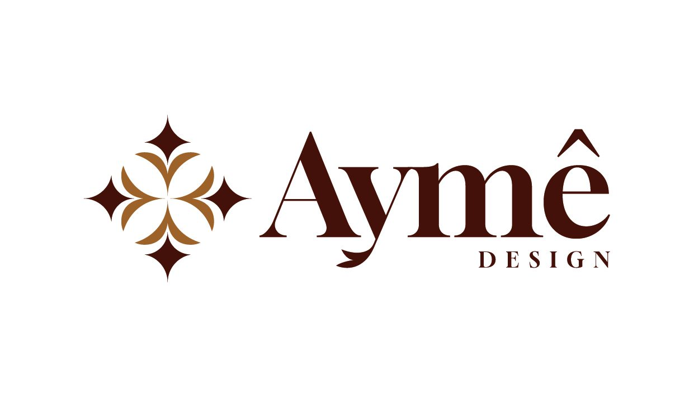
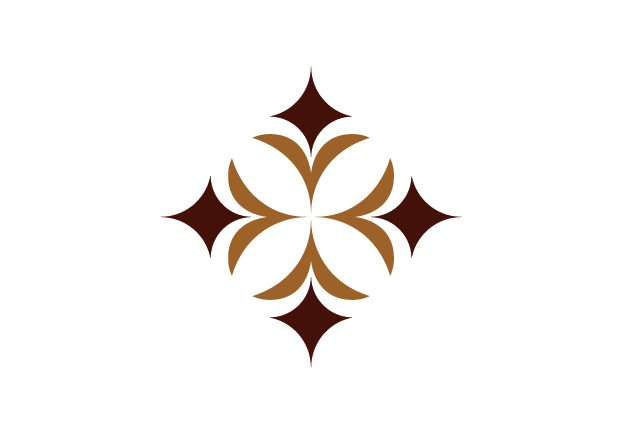

A Base
Partimos das linhas cruzadas e diagonais originais do grafismo indígena tradicional.
Marca inspirada no resgate do grafismo sagrado Tupi-Guarani, traduzido para a linguagem do design contemporâneo.

01 / O CONCEITO
A nossa começa muito antes de nós, traçada na pele e na alma dos povos originários do Brasil.
A identidade visual da Aymê Design nasce de uma imersão na sabedoria Tupi-Guarani, resgatando o grafismo sagrado do Araku Pytxã. Conhecido popularmente como "pé de saracura", este símbolo não é apenas uma forma estética; ele é um amuleto.
02 / A SIMBOLOGIA
Originalmente, o Araku Pytxã é uma pintura facial feminina, desenhada para conferir proteção a quem a carrega.
É o escudo desenhado com a delicadeza e a força da mulher indígena, servindo como uma barreira contra o mal e um guia para caminhos seguros.

03 / A RELEITURA
O nosso desafio foi traduzir a força rústica e orgânica desse traço ancestral para a linguagem precisa e sofisticada do design atual.
Partimos das linhas cruzadas e diagonais originais do grafismo indígena tradicional.
Através de um processo de geometria redutiva, limpamos os excessos, preservando a essência e a pulsação da forma.
O ícone final desabrocha em quatro pontas cardeais, lembrando uma estrela ou flor estilizada. Formas côncavas em movimento de expansão com centro sólido e unificado.

